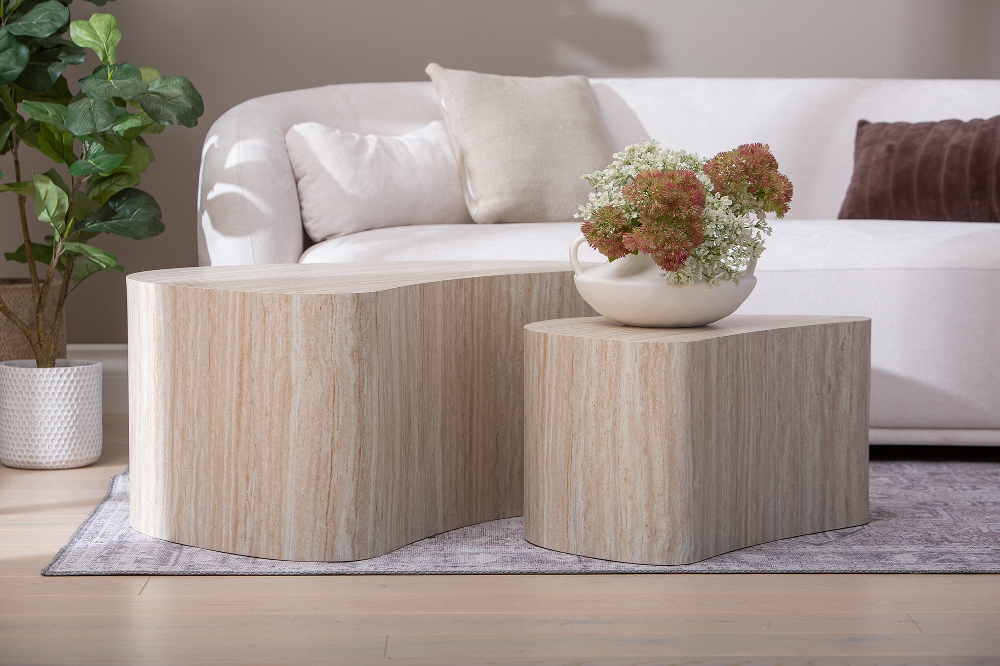
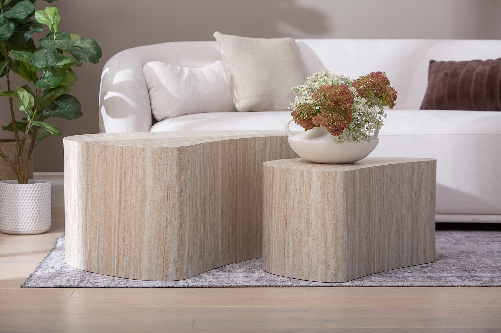
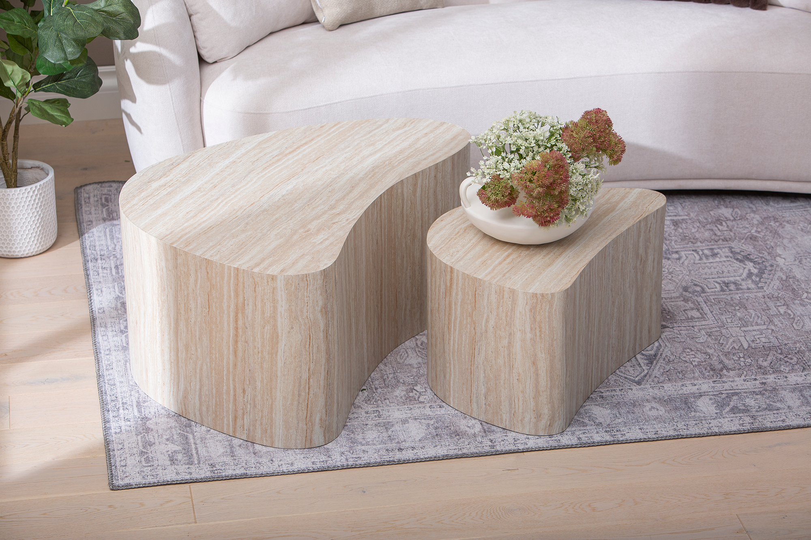
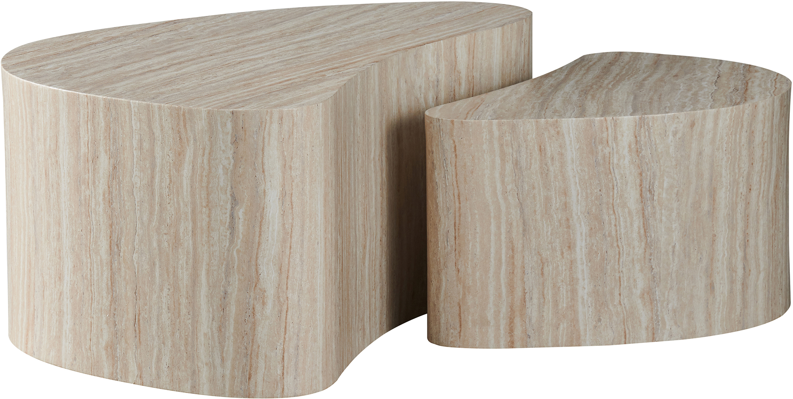
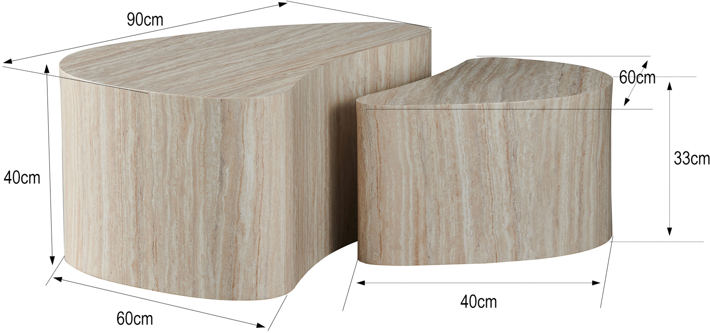
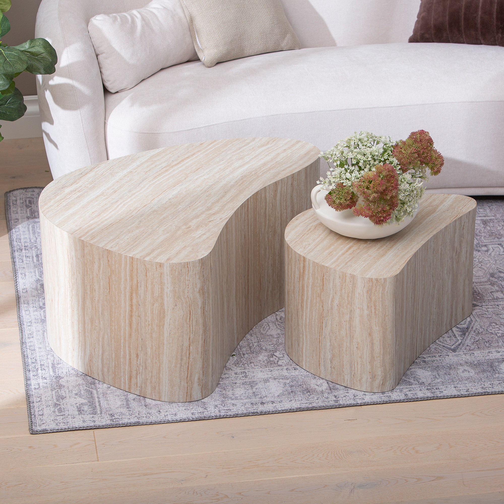
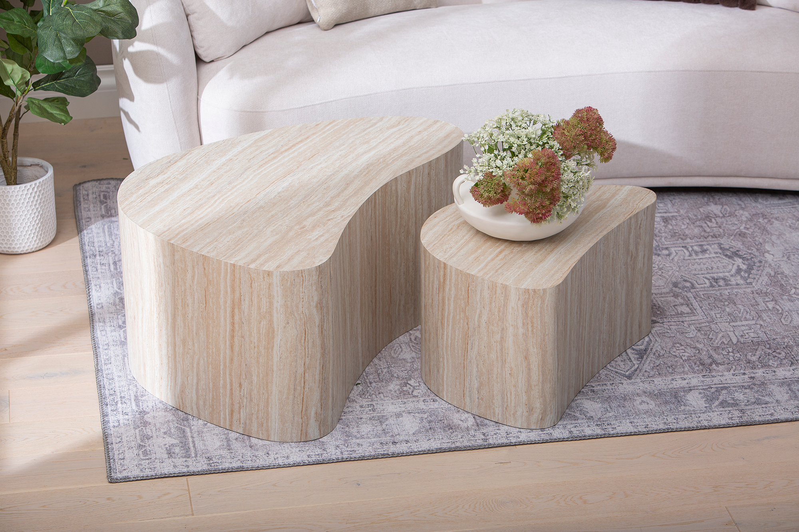
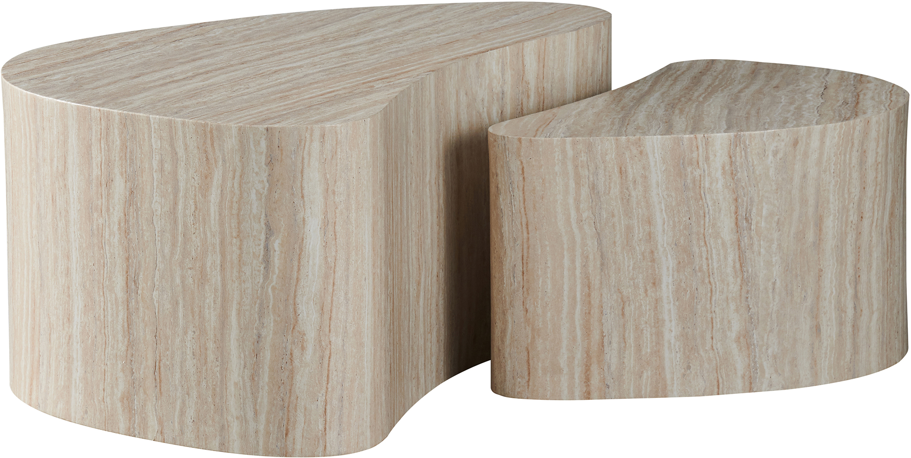
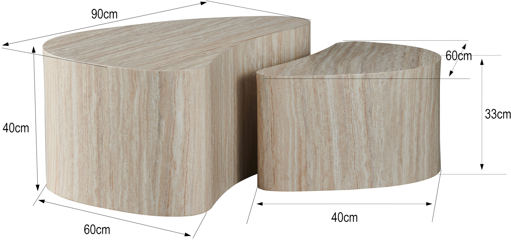
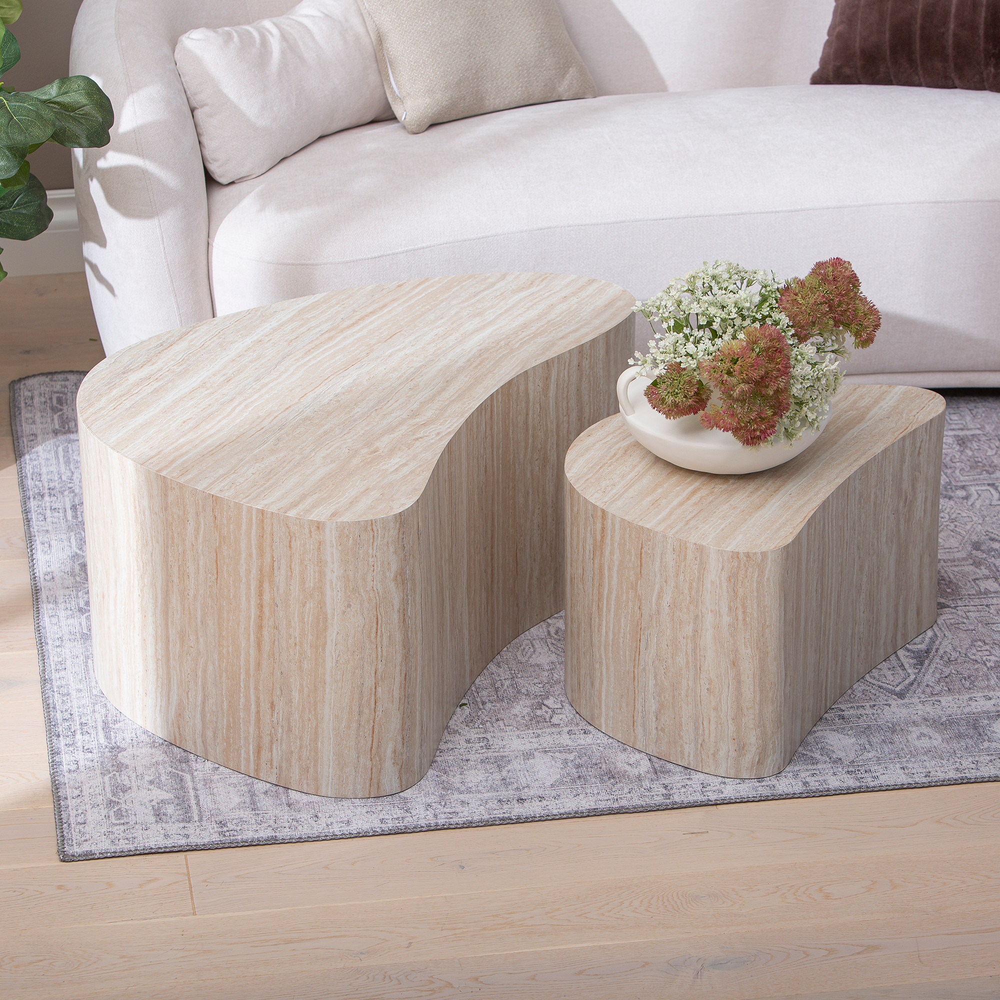

Island sarjapöytä 90x60x40 + 60x40x33 beige
198071


 


 







Kuvaus
Island sarjapöytä – ajaton tyylikkyys beigen sävyssä Island-sarjapöytä tuo sisustukseen pehmeää eleganssia ja modernia ilmettä. Sen neutraali beige sävy sopii täydellisesti skandinaaviseen, minimalistiseen ja luonnonläheiseen sisustustyyliin, luoden harmonisen ja lämpimän tunnelman kotiisi. Monipuolinen ja käytännöllinen design Island-sarjapöytä koostuu kahdesta eri kokoisesta pöydästä, jotka voi asettaa päällekkäin tilan säästämiseksi tai erikseen suuremman laskutilan tarpeeseen. Suuremman pöydän mitat ovat 90 x 60 x 40 cm, ja pienemmän 60 x 40 x 33 cm. Epäsymmetrinen muotoilu tekee kokonaisuudesta visuaalisesti mielenkiintoisen ja monikäyttöisen. Kestävä ja helppohoitoinen materiaali Beigen sävyinen viimeistely antaa pöydälle pehmeän ja luonnollisen ilmeen. Laadukas materiaali takaa kestävyyden ja tekee pöydästä helppohoitoisen – se kestää hyvin arjen käyttöä ja on vaivaton puhdistaa. Loistava hintalaatusuhde Island-sarjapöytä yhdistää tyylikkyyden ja käytännöllisyyden edulliseen hintaan. Sen ajaton muotoilu ja laadukas rakenne takaavat, että se säilyttää ilmeensä vuodesta toiseen ja sopii monenlaisiin sisustuksiin.
Tekniset tiedot
| Koko | 90 × 60 |
|---|---|
| Väri | Beige |